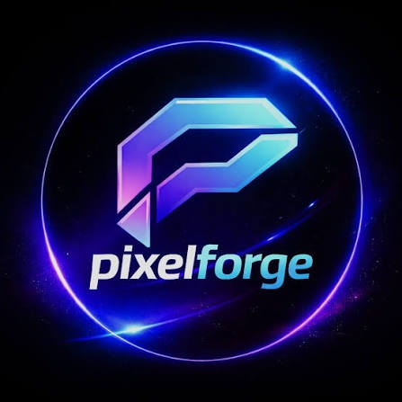

Operação horizonte sem tela de carregamento
O desafio era conquistar o público de eSports e entusiastas que exigia taxa de quadros extrema e carregamento instantâneo em títulos pesados de última geração. a solução é que a PixelForge lançou o console *ForgeCore Titan*, integrando uma arquitetura de memória unificada com sistema de resfriamento por câmara de vapor e metal líquido. e o resultado foi que o console bateu o recorde de vendas de pré-garantia para uma entrant de hardware, vendendo mais de *500 mil unidades no primeiro mês* e tornando-se a plataforma oficial do maior campeonato global de FPS do ano.